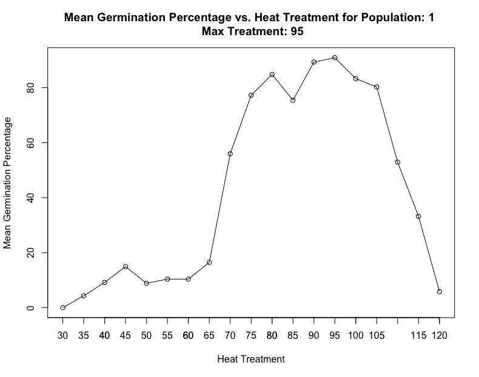
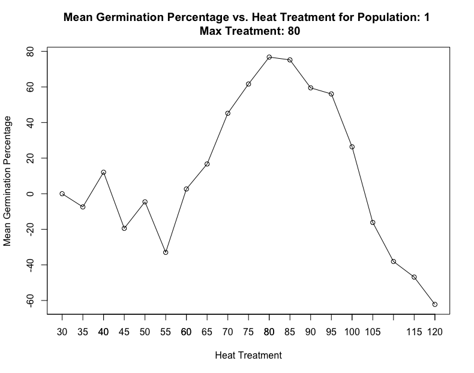
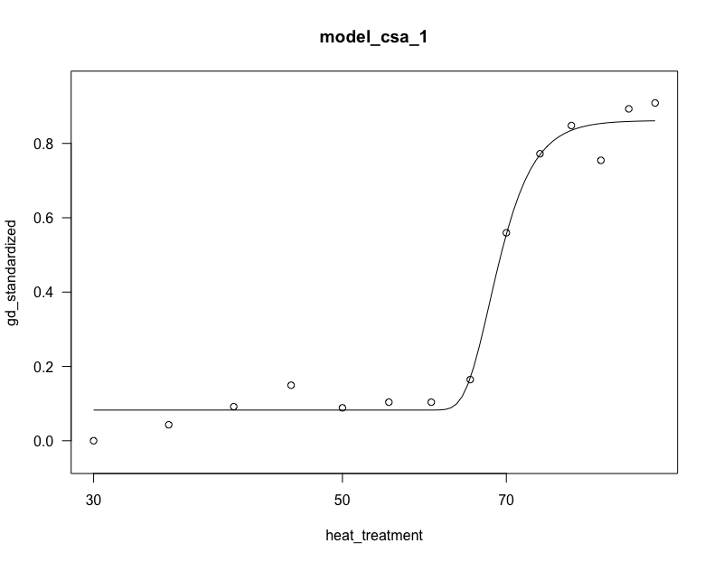
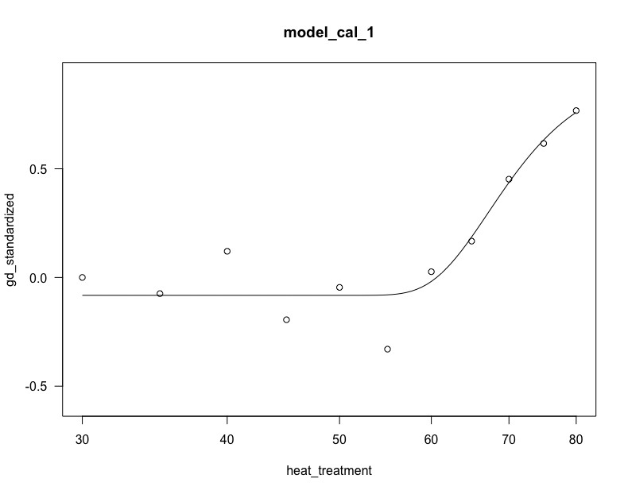

Fire and summer temperatures interact to shape seed dormancy thresholds
Zomer et al. 2022
1 Germination curve standardization
Germination data were plotted against the 19 experimental heat temperatures to obtain a germination curve for each population. Germination typically increases with heat until a maximum is reached at temperatures optimal for dormancy release (typically 80–110 °C for Cistus species), then begins to fall due to an increase in seed mortality at very high temperatures. The lowest heat treatment of 30 °C, equivalent to the mean temperature during the summer, was used to standardize the germination curve. This temperature has been previously shown to not break seed dormancy for our species, therefore germination at this heat treatment represents the fraction of non-dormant seeds. For each population, we removed this non-dormant fraction from the final analysis.
### Read germination dataseeds_data =read.csv("/Users/maya/Dropbox/Maya Thesis/Seed Thermal Thresholds/seed_thresholds_R/input/germination_data.csv")# Show data in a tabledatatable(seeds_data, filter ="top")
#Calculate germination percentage#remove empty seeds from total seeds, and calculate percentage germinated of new totalseeds_data <- seeds_data %>%mutate(new_total_seeds = total_seeds -coalesce(empty_seeds, 0),germination_percentage = (germinated_seeds / new_total_seeds) *100)
#Standardize for non-dormant seeds ------# Calculate mean germination percentage for the '30' heat treatment: represent non-dormant seedsmean_gp_control <- seeds_data %>%filter(heat_treatment =='30') %>%group_by(species, population) %>%summarise(gp_control =mean(germination_percentage, na.rm =TRUE)) %>%ungroup()# Merge mean germination data back into the original data frame# Standardize: germination_percentage - % non dormant seeds) / (100 % - non dormant seeds%) *100# Subtracting the non-dormant seeds percentage from 100% provides the percentage of viable seeds that could potentially germinate # under optimal conditions# Calculate both percentage gp and decimal form gdmerged_data <- seeds_data %>%left_join(mean_gp_control, by =c("species", "population")) %>%mutate(gp_standardized = (germination_percentage - gp_control) / (100- gp_control) *100,gd_standardized = (germination_percentage - gp_control) / (100- gp_control))
2 Germination Indices
Maximum germination and the corresponding heat treatment were identified for each population.
#Maximum germination and corresponding heat treatment for each population -----# Calculate the mean_standardized germination of the three replicates for each species, population, and heat treatmentmean_standardized <- merged_data %>%group_by(species, population, heat_treatment) %>%summarise(mean_gp_standardized =mean(gp_standardized))# Identify the maximum mean_standardized germination for each species and populationmax_standardized <- mean_standardized %>%group_by(species, population) %>%filter(mean_gp_standardized ==max(mean_gp_standardized)) %>%ungroup()# Rename 'heat_treatment' column in 'max_standardized' to 'max_heat_treatment' and mean_gp to max_gp_meanmax_standardized <- max_standardized %>%rename(max_heat_treatment = heat_treatment,max_gp_mean = mean_gp_standardized)# Merge 'max_standardized' back into 'merged_data'final_data <- merged_data %>%left_join(max_standardized, by =c("species", "population"))#Set gp_standardized and gd_standardized in heat treatment 30 to 0# subtracting the mean of the control treatment from itself (each replicate) does not provide useful information final_data <- final_data %>%mutate(gp_standardized =ifelse(heat_treatment =='30', 0, gp_standardized),gd_standardized =ifelse(heat_treatment =='30', 0, gd_standardized))
#Save new dataframe as RDS filesaveRDS(final_data, file ="/Users/maya/Dropbox/Maya Thesis/Seed Thermal Thresholds/seed_thresholds_R/input/final_data.rds")
3 Germination Indices Plots
#Plots ----#set colour schememy_palette <- rcartocolor::carto_pal(n =12, name ="Prism")[c(2, 6)]# Set order of factor 'species'max_standardized$species <-factor(max_standardized$species, levels =c("CAL", "CSA"))# jittered points for original data, set dodge widthdodge <-position_dodge(width =5)# box and whisker plot of maximum germination for each populationa<-ggplot(max_standardized, aes(x = species, y = max_gp_mean, color = species, fill = species)) +scale_y_continuous(name ="Maximum germination (%)", limits =c(50, 100)) +scale_color_manual(values = my_palette, guide =waiver()) +scale_fill_manual(values = my_palette, guide =waiver()) +scale_x_discrete(name ="", labels =c("CAL"="C. albidus", "CSA"="C. salviifolius")) +geom_boxplot(width =0.2, color ="black", alpha =0.3) +theme(axis.text.x =element_text(size =14)) +theme_classic2(base_size =14) +geom_point(position =position_jitter(width =0.1, seed =0),size =4, alpha =0.5, )b <-ggplot(max_standardized, aes(x = species, y = max_heat_treatment, color = species, fill = species)) +scale_y_continuous(name ="Heat for maximum germination (°C)", limits =c(70, 120)) +scale_color_manual(values = my_palette, guide =waiver()) +scale_fill_manual(values = my_palette, guide =waiver()) +scale_x_discrete(name ="", labels =c("CAL"="C. albidus", "CSA"="C. salviifolius")) +geom_boxplot(width =0.2, color ="black", alpha =0.3) +theme(axis.text.x =element_text(size =14)) +theme_classic2(base_size =14) +geom_point(position =position_jitter(width =0.1, seed =0), size =4, alpha =0.5, )# arrange plots patchworka + b
4 Filter data to maximum
For the following models, we used only the first part of the germination curve, i.e. up to the maximum germination (for each population). In this section, we filter data to limit data at maximum germination and corresponding heat treatment. If there are two similar peaks in germination, we manually select the second.
# Filter data to limit data at maximum germination and corresponding heat treatment#upload clean datadata <-readRDS(file ="/Users/maya/Dropbox/Maya Thesis/Seed Thermal Thresholds/seed_thresholds_R/input/final_data.rds")# Define custom function to select peak heat and filter dataselect_peak_and_filter <-function(data, population, max_heat_treatment) {# Print populationcat("Population:", population, "\n")# Get unique maximum heat treatment value for the population unique_max_heat_treatment <-unique(max_heat_treatment)# Print the maximum heat treatment value (if it's unique)if (length(unique_max_heat_treatment) ==1) {cat("Max Treatment:", unique_max_heat_treatment, "\n") }# Calculate mean germination percentage for each heat treatment mean_germination <- data %>%group_by(species, population, heat_treatment) %>%summarise(mean_gp =mean(gp_standardized))# Plot mean germination percentageplot(mean_germination$heat_treatment, mean_germination$mean_gp, type ="o", xlab ="Heat Treatment", ylab ="Mean Germination Percentage",main =paste("Mean Germination Percentage vs. Heat Treatment for Population:", population, "\n", "Max Treatment:", unique_max_heat_treatment))# Customize x-axis to split by 5 degreesaxis(1, at =seq(0, max(mean_germination$heat_treatment), by =5))# Allow user to select peak interactively peak <-readline(prompt ="Enter peak (y/n): ")if (tolower(peak) =="y") { peak_value <-as.numeric(readline(prompt ="Enter peak value: "))# Filter data based on peak heat treatmentfiltered_data <- data[data$heat_treatment <= peak_value, ]return(filtered_data) } else {# If peak is not selected, use the original max_heat_treatment value for filtering max_heat_treatment <-max(max_heat_treatment) filtered_data <- data[data$heat_treatment <= max_heat_treatment, ]return(filtered_data) }}# Split data into separate data frames for each population of Cistus salviifoliuscsapop_split <-split(data[data$species =="CSA", ], data[data$species =="CSA", ]$population)# Split data into separate data frames for each population of Cistus albiduscalpop_split <-split(data[data$species =="CAL", ], data[data$species =="CAL", ]$population)
# select peak CSA#pass through population plots one by one#approve or manually set peak heat#csa 3 change to 120 ;csa 10 to 100csa_populations <-Map(select_peak_and_filter, csapop_split, names(csapop_split), lapply(csapop_split, function(data) data$max_heat_treatment))

Population: 1
Max Treatment: 95
Enter peak (y/n):
# select peak CAL#pass through population plots one by one#approve or manually set peak heat#cal 3 change to 95 ;cal 8 to 90; cal 11 to 95; cal 13 to 90; cal 15 to 105 \# cal 18 to 90; cal 19 to 85; cal 20 to 90cal_populations <-Map(select_peak_and_filter, calpop_split, names(calpop_split), lapply(calpop_split, function(data) data$max_heat_treatment))

Population: 1
Max Treatment: 80
Enter peak (y/n):
#Save as dataframescombined_csa <-bind_rows(csa_populations, .id ="population_id") combined_cal <-bind_rows(cal_populations, .id ="population_id")#Save filtered data as RDS filesaveRDS(combined_csa, file ="/Users/maya/Dropbox/Maya Thesis/Seed Thermal Thresholds/seed_thresholds_R/input/filtered_csa_data.rds")saveRDS(combined_cal, file ="/Users/maya/Dropbox/Maya Thesis/Seed Thermal Thresholds/seed_thresholds_R/input/filtered_cal_data.rds")
5 Dose response curves
We used Dose response curves to predict the heat dose required for the response of seeds to reach the 20th, 30th, 40th, 50th and 60th percentiles of germination, with 95 % confidence intervals.
To do so, we fitted either a four-parameter non-linear Weibull or a four-parameter log-logistic function, chosen with the myselect function, according to the Akaike information criterion (AIC), log likelihood estimations and lack-of- fit test. Four parameters were necessary as the lower limits were not fixed at 0 after standardizing the curve for non-dormant seeds (there were a range of low heat treatments that likely caused mortality in non-dormant seeds, but didn’t stimulate germination in dormant ones).
#Show model plots # Iterate over each model in the list and plot themfor (model_name innames(models)) {plot(models[[model_name]], main = model_name)# Wait for the plot to be closed input <-readline(prompt ="Press Enter to continue...")}


6 Effective dose ‘Lower heat threshold’
From these models, the effective dose (ED) function was used to predict the effective heat doses, or ‘lower heat thresholds’ at which 20–60 % dormancy release occurs for each population.
# function for 'ed'ed <-function(x) {ED(x, c(0.2, 0.3, 0.4, 0.5, 0.6), type ="absolute", interval ="delta")}# apply ed function to the list of all modelsed.all <-sapply(models, FUN = ed, simplify =FALSE, USE.NAMES =TRUE)# convert to dataframeed.df <-do.call(rbind.data.frame, ed.all)# export to csvwrite.csv(ed.df, file ="/Users/maya/Dropbox/Maya Thesis/Seed Thermal Thresholds/seed_thresholds_R/input/ed_all2.csv")# note: in csv model name and dormancy release level are combined in first column.# reformatted csv loaded in next section# e:1:0.2 = 0.2 or 20% dormancy release# e:1:0.3 = 30%# e:1:0.4 = 40%# e:1:0.5 = 50%# e:1:0.6 = 60%
7 Combine thresholds with climate data
# reformatted effective dose csved.estimate <-read.csv(("/Users/maya/Dropbox/Maya Thesis/Seed Thermal Thresholds/seed_thresholds_R/input/ed.all.csv"), header =TRUE, sep =",", na.strings =c("", "NA"))# site characteristics, climate, fire, and seed mass variablessites <-read.csv(("/Users/maya/Dropbox/Maya Thesis/Seed Thermal Thresholds/seed_thresholds_R/input/site_data.csv"), header =TRUE, sep =",", na.strings =c("", "NA"))#mergeed_climate <-merge(sites, ed.estimate, by =c("species", "pop"))# clean dataed_climate <-na.omit(ed_climate)ed_climate$Estimate <-as.numeric(ed_climate$Estimate)# export to csv#write.csv(ed_climate, file = "input/ed_climate.csv")
8 Regression variable selection
To test to what extent heat thresholds of each population were related to their local climate, a linear regression model was fitted to lower heat threshold estimates. Species, dormancy release level, latitude, bioclimatic, fire and seed mass variables were added to the model as fixed effects. We used a stepwise approach to select the most parsimonious model; each step was assessed with analysis of variance (ANOVA) test and AIC.
#upload merged dataed_climate =read.csv("/Users/maya/Dropbox/Maya Thesis/Seed Thermal Thresholds/seed_thresholds_R/input/ed_climate.csv")# Model Selection# add variables into model in order of contribution to variance# compare to null model using ANOVA# Create a null modelnull_model <-lm(Estimate ~1, data = ed_climate)# List of variablesvariables <-c("dormancy_release", "species", "BIO_05", "BIO_01", "elevation", "seed_mass", "BIO_12", "aridity_index", "burned_area_percent", "annual_number_fires", "lat")# Perform ANOVA for each variablefor (var in variables) {# Update the null model with the current variable updated_model <-update(null_model, reformulate(var, response ="Estimate"), data = ed_climate)# Perform ANOVA anova_result <-anova(null_model, updated_model)# Extract p-value p_value <- anova_result[2, "Pr(>F)"]# Display resultscat("Variable:", var, "\n")cat("AIC:", AIC(updated_model), "\n")cat("p-value:", format(p_value, scientific =TRUE), "\n")if (p_value <0.001) {cat("***\n") } elseif (p_value <0.01) {cat("**\n") } elseif (p_value <0.05) {cat("*\n") } else {cat("ns\n") }cat("\n")}
#REPEAT until variables no longer contribute to variance#Iteration 2# Create a null modelnull_model_2 <-lm(Estimate ~ dormancy_release, data = ed_climate)AIC_null_2 <-AIC(null_model_2)cat("Null model AIC:", AIC_null_2, "\n")# List of variablesvariables_2 <-c( "species", "BIO_05", "BIO_01", "elevation", "seed_mass", "BIO_12", "aridity_index", "burned_area_percent", "annual_number_fires", "lat")# Perform ANOVA for each variablefor (var in variables_2) {# Update the null model with the current variable updated_model_2 <-update(null_model_2, reformulate(c("dormancy_release", var), response ="Estimate"), data = ed_climate)# Perform ANOVA anova_result_2 <-anova(null_model_2, updated_model_2)# Extract p-value p_value <- anova_result_2[2, "Pr(>F)"]# Display resultscat("Variable:", var, "\n")cat("AIC:", AIC(updated_model_2), "\n")cat("p-value:", format(p_value, scientific =TRUE), "\n")if (p_value <0.001) {cat("***\n") } elseif (p_value <0.01) {cat("**\n") } elseif (p_value <0.05) {cat("*\n") } else {cat("ns\n") }cat("\n")}#Iteration 3# Create a null modelnull_model_3 <-lm(Estimate ~ dormancy_release + species, data = ed_climate)AIC_null_3 <-AIC(null_model_3)cat("Null model AIC:", AIC_null_3, "\n")# List of variablesvariables_3 <-c( "BIO_05", "BIO_01", "elevation", "seed_mass", "BIO_12", "aridity_index", "burned_area_percent", "annual_number_fires", "lat")# Perform ANOVA for each variablefor (var in variables_3) {# Update the null model with the current variable updated_model_3 <-update(null_model_3, reformulate(c("dormancy_release", "species",var), response ="Estimate"), data = ed_climate)# Perform ANOVA anova_result_3 <-anova(null_model_3, updated_model_3)# Extract p-value p_value <- anova_result_3[nrow(anova_result_3), "Pr(>F)"]# Display resultscat("Variable:", var, "\n")cat("AIC:", AIC(updated_model_3), "\n")cat("p-value:", format(p_value, scientific =TRUE), "\n")if (p_value <0.001) {cat("***\n") } elseif (p_value <0.01) {cat("**\n") } elseif (p_value <0.05) {cat("*\n") } else {cat("ns\n") }cat("\n")}#Iteration 4# Create a null modelnull_model_4 <-lm(Estimate ~ dormancy_release + species +BIO_05, data = ed_climate)AIC_null_4 <-AIC(null_model_4)cat("Null model AIC:", AIC_null_4, "\n")# List of variablesvariables_4 <-c( "BIO_01", "elevation", "seed_mass", "BIO_12", "aridity_index", "burned_area_percent", "annual_number_fires", "lat")# Perform ANOVA for each variablefor (var in variables_4) {# Update the null model with the current variable updated_model_4 <-update(null_model_4, reformulate(c("dormancy_release", "species","BIO_05",var), response ="Estimate"), data = ed_climate)# Perform ANOVA anova_result_4 <-anova(null_model_4, updated_model_4)# Extract p-value p_value <- anova_result_4[nrow(anova_result_4), "Pr(>F)"]# Display resultscat("Variable:", var, "\n")cat("AIC:", AIC(updated_model_4), "\n")cat("p-value:", format(p_value, scientific =TRUE), "\n")if (p_value <0.001) {cat("***\n") } elseif (p_value <0.01) {cat("**\n") } elseif (p_value <0.05) {cat("*\n") } else {cat("ns\n") }cat("\n")}
9 Final model results
# linear regression with maximum temperature of warmest month (BIO_05), dormancy release %, and species as fixed factorsfinal_model <-lm(Estimate ~ BIO_05 * dormancy_release + BIO_05 * species, ed_climate)# lm parametersanova(final_model)
DHARMa nonparametric dispersion test via sd of residuals fitted vs.
simulated
data: simulationOutput
dispersion = 0.97083, p-value = 0.848
alternative hypothesis: two.sided
10 Prediction plot
#calculate predictions#' predict' base r to calculate predictions and confidence intervalsed_climate$predlm <-predict(final_model)# remove NAed_climate <-na.omit(ed_climate)#predict predslm.ed <-predict(final_model, interval ="confidence")#combine predictions with climatedatlm <-cbind(ed_climate, predslm.ed)
#plot# set colour schememy_pal3 <- rcartocolor::carto_pal(n =12, name ="Prism")[c(6, 2)]# rename dormancy release levelsnew_labels2 <-c("20"="20", "30"="30 ", "40"="40", "50"="50", "60"="60")# set species orderdatlm$species <-factor(datlm$species, levels =c("CSA", "CAL"))# plot predicted linear regression with confidence intervals and raw data (points)plot <-ggplot(datlm, aes(x = BIO_05 /10, y = Estimate, color = species, fill = species)) +geom_point(alpha =0.27) +geom_ribbon(aes(ymin = lwr, ymax = upr, colour =NULL), alpha = .2) +geom_line(aes(y = fit), size =0.7) +scale_colour_manual(values = my_pal3, name ="", labels =c("C. salviifolius", "C. albidus")) +scale_fill_manual(values = my_pal3, name ="", labels =c("C. salviifolius", "C. albidus")) +theme_classic()# facet grid to divide by dormancy release %plot <- plot +facet_grid(~dormancy_release, labeller =labeller(germ_per = new_labels2))# axes titlesplot <- plot +xlab(expression("Maximum temperature of warmest month (°C)")) +ylab(expression(" Lower heat threshold (°C)"))# format legendplot <- plot +theme(panel.background =element_rect(fill =NA, color ="black")) +theme(legend.background =element_rect(fill ="white", color ="black"),legend.key =element_rect(fill ="white", color ="NA") ) +theme(legend.position =c(0.19, 0.8), legend.direction ="horizontal")# legend positionplot +theme(strip.text.x =element_text(face ="bold")) +guides(fill =guide_legend(reverse =TRUE), colour =guide_legend(reverse =TRUE)) +ggtitle("Dormancy release (%)") +theme(plot.title =element_text(hjust =0.07, vjust =0.5, size =9, face ="bold"))
Source Code
---title: 'Fire and summer temperatures interact to shape seed dormancy thresholds'subtitle: 'Zomer et al. 2022'format: html: code-fold: False code-tools: true toc: true toc-location: left toc-title: " " number-sections: trueeditor: sourcefig-cap-location: margin---## Germination curve standardizationGermination data were plotted against the 19 experimental heat temperatures to obtain a germination curve for each population. Germination typically increases with heat until a maximum is reached at temperatures optimal for dormancy release (typically 80--110 °C for Cistus species), then begins to fall due to an increase in seed mortality at very high temperatures. The lowest heat treatment of 30 °C, equivalent to the mean temperature during the summer, was used to standardize the germination curve. This temperature has been previously shown to not break seed dormancy for our species, therefore germination at this heat treatment represents the fraction of non-dormant seeds. For each population, we removed this non-dormant fraction from the final analysis.```{r, warning=FALSE, message=FALSE}#check working directorygetwd()#source functions for scriptsource(file="/Users/maya/Dropbox/Maya Thesis/Seed Thermal Thresholds/seed_thresholds_R/R/functions_seeds.R")# load librarieslibrary(DT)library(tidyverse)library(ggpubr)library(patchwork) #combine charts togetherlibrary(cowplot) #combine plotslibrary(RColorBrewer) #colour schemeslibrary(rcartocolor) #colour schemeslibrary(DT) #data tablelibrary(drc) #dose response curveslibrary(lme4) #mixed modelslibrary(lmtest) #p values lmerlibrary(sandwich) #model validationlibrary(performance) #check colinearitylibrary(DHARMa) #check residuals``````{r, warning=FALSE, message=FALSE}### Read germination dataseeds_data =read.csv("/Users/maya/Dropbox/Maya Thesis/Seed Thermal Thresholds/seed_thresholds_R/input/germination_data.csv")# Show data in a tabledatatable(seeds_data, filter ="top")#Calculate germination percentage#remove empty seeds from total seeds, and calculate percentage germinated of new totalseeds_data <- seeds_data %>%mutate(new_total_seeds = total_seeds -coalesce(empty_seeds, 0),germination_percentage = (germinated_seeds / new_total_seeds) *100)``````{r, warning=FALSE, message=FALSE}#Standardize for non-dormant seeds ------# Calculate mean germination percentage for the '30' heat treatment: represent non-dormant seedsmean_gp_control <- seeds_data %>%filter(heat_treatment =='30') %>%group_by(species, population) %>%summarise(gp_control =mean(germination_percentage, na.rm =TRUE)) %>%ungroup()# Merge mean germination data back into the original data frame# Standardize: germination_percentage - % non dormant seeds) / (100 % - non dormant seeds%) *100# Subtracting the non-dormant seeds percentage from 100% provides the percentage of viable seeds that could potentially germinate # under optimal conditions# Calculate both percentage gp and decimal form gdmerged_data <- seeds_data %>%left_join(mean_gp_control, by =c("species", "population")) %>%mutate(gp_standardized = (germination_percentage - gp_control) / (100- gp_control) *100,gd_standardized = (germination_percentage - gp_control) / (100- gp_control))```## Germination IndicesMaximum germination and the corresponding heat treatment were identified for each population.```{r, warning=FALSE, message=FALSE}#Maximum germination and corresponding heat treatment for each population -----# Calculate the mean_standardized germination of the three replicates for each species, population, and heat treatmentmean_standardized <- merged_data %>%group_by(species, population, heat_treatment) %>%summarise(mean_gp_standardized =mean(gp_standardized))# Identify the maximum mean_standardized germination for each species and populationmax_standardized <- mean_standardized %>%group_by(species, population) %>%filter(mean_gp_standardized ==max(mean_gp_standardized)) %>%ungroup()# Rename 'heat_treatment' column in 'max_standardized' to 'max_heat_treatment' and mean_gp to max_gp_meanmax_standardized <- max_standardized %>%rename(max_heat_treatment = heat_treatment,max_gp_mean = mean_gp_standardized)# Merge 'max_standardized' back into 'merged_data'final_data <- merged_data %>%left_join(max_standardized, by =c("species", "population"))#Set gp_standardized and gd_standardized in heat treatment 30 to 0# subtracting the mean of the control treatment from itself (each replicate) does not provide useful information final_data <- final_data %>%mutate(gp_standardized =ifelse(heat_treatment =='30', 0, gp_standardized),gd_standardized =ifelse(heat_treatment =='30', 0, gd_standardized))``````{r, warning=FALSE, message=FALSE}#Save new dataframe as RDS filesaveRDS(final_data, file ="/Users/maya/Dropbox/Maya Thesis/Seed Thermal Thresholds/seed_thresholds_R/input/final_data.rds")```## Germination Indices Plots```{r, warning=FALSE, message=FALSE}#Plots ----#set colour schememy_palette <- rcartocolor::carto_pal(n =12, name ="Prism")[c(2, 6)]# Set order of factor 'species'max_standardized$species <-factor(max_standardized$species, levels =c("CAL", "CSA"))# jittered points for original data, set dodge widthdodge <-position_dodge(width =5)# box and whisker plot of maximum germination for each populationa<-ggplot(max_standardized, aes(x = species, y = max_gp_mean, color = species, fill = species)) +scale_y_continuous(name ="Maximum germination (%)", limits =c(50, 100)) +scale_color_manual(values = my_palette, guide =waiver()) +scale_fill_manual(values = my_palette, guide =waiver()) +scale_x_discrete(name ="", labels =c("CAL"="C. albidus", "CSA"="C. salviifolius")) +geom_boxplot(width =0.2, color ="black", alpha =0.3) +theme(axis.text.x =element_text(size =14)) +theme_classic2(base_size =14) +geom_point(position =position_jitter(width =0.1, seed =0),size =4, alpha =0.5, )b <-ggplot(max_standardized, aes(x = species, y = max_heat_treatment, color = species, fill = species)) +scale_y_continuous(name ="Heat for maximum germination (°C)", limits =c(70, 120)) +scale_color_manual(values = my_palette, guide =waiver()) +scale_fill_manual(values = my_palette, guide =waiver()) +scale_x_discrete(name ="", labels =c("CAL"="C. albidus", "CSA"="C. salviifolius")) +geom_boxplot(width =0.2, color ="black", alpha =0.3) +theme(axis.text.x =element_text(size =14)) +theme_classic2(base_size =14) +geom_point(position =position_jitter(width =0.1, seed =0), size =4, alpha =0.5, )# arrange plots patchworka + b```## Filter data to maximumFor the following models, we used only the first part of the germination curve, i.e. up to the maximum germination (for each population). In this section, we filter data to limit data at maximum germination and corresponding heat treatment. If there are two similar peaks in germination, we manually select the second.```{r, warning=FALSE, message=FALSE}# Filter data to limit data at maximum germination and corresponding heat treatment#upload clean datadata <-readRDS(file ="/Users/maya/Dropbox/Maya Thesis/Seed Thermal Thresholds/seed_thresholds_R/input/final_data.rds")# Define custom function to select peak heat and filter dataselect_peak_and_filter <-function(data, population, max_heat_treatment) {# Print populationcat("Population:", population, "\n")# Get unique maximum heat treatment value for the population unique_max_heat_treatment <-unique(max_heat_treatment)# Print the maximum heat treatment value (if it's unique)if (length(unique_max_heat_treatment) ==1) {cat("Max Treatment:", unique_max_heat_treatment, "\n") }# Calculate mean germination percentage for each heat treatment mean_germination <- data %>%group_by(species, population, heat_treatment) %>%summarise(mean_gp =mean(gp_standardized))# Plot mean germination percentageplot(mean_germination$heat_treatment, mean_germination$mean_gp, type ="o", xlab ="Heat Treatment", ylab ="Mean Germination Percentage",main =paste("Mean Germination Percentage vs. Heat Treatment for Population:", population, "\n", "Max Treatment:", unique_max_heat_treatment))# Customize x-axis to split by 5 degreesaxis(1, at =seq(0, max(mean_germination$heat_treatment), by =5))# Allow user to select peak interactively peak <-readline(prompt ="Enter peak (y/n): ")if (tolower(peak) =="y") { peak_value <-as.numeric(readline(prompt ="Enter peak value: "))# Filter data based on peak heat treatmentfiltered_data <- data[data$heat_treatment <= peak_value, ]return(filtered_data) } else {# If peak is not selected, use the original max_heat_treatment value for filtering max_heat_treatment <-max(max_heat_treatment) filtered_data <- data[data$heat_treatment <= max_heat_treatment, ]return(filtered_data) }}# Split data into separate data frames for each population of Cistus salviifoliuscsapop_split <-split(data[data$species =="CSA", ], data[data$species =="CSA", ]$population)# Split data into separate data frames for each population of Cistus albiduscalpop_split <-split(data[data$species =="CAL", ], data[data$species =="CAL", ]$population)``````{r, warning=FALSE, message=FALSE,fig.show='hide',results='hide'}# select peak CSA#pass through population plots one by one#approve or manually set peak heat#csa 3 change to 120 ;csa 10 to 100csa_populations <-Map(select_peak_and_filter, csapop_split, names(csapop_split), lapply(csapop_split, function(data) data$max_heat_treatment))```Population: 1Max Treatment: 95Enter peak (y/n):```{r, warning=FALSE, message=FALSE,fig.show='hide',results='hide'}# select peak CAL#pass through population plots one by one#approve or manually set peak heat#cal 3 change to 95 ;cal 8 to 90; cal 11 to 95; cal 13 to 90; cal 15 to 105 \# cal 18 to 90; cal 19 to 85; cal 20 to 90cal_populations <-Map(select_peak_and_filter, calpop_split, names(calpop_split), lapply(calpop_split, function(data) data$max_heat_treatment))```Population: 1Max Treatment: 80Enter peak (y/n):```{r, warning=FALSE, message=FALSE}#Save as dataframescombined_csa <-bind_rows(csa_populations, .id ="population_id") combined_cal <-bind_rows(cal_populations, .id ="population_id")#Save filtered data as RDS filesaveRDS(combined_csa, file ="/Users/maya/Dropbox/Maya Thesis/Seed Thermal Thresholds/seed_thresholds_R/input/filtered_csa_data.rds")saveRDS(combined_cal, file ="/Users/maya/Dropbox/Maya Thesis/Seed Thermal Thresholds/seed_thresholds_R/input/filtered_cal_data.rds")```## Dose response curvesWe used Dose response curves to predict the heat dose required for the response of seeds to reach the 20th, 30th, 40th, 50th and 60th percentiles of germination, with 95 % confidence intervals.To do so, we fitted either a four-parameter non-linear Weibull or a four-parameter log-logistic function, chosen with the myselect function, according to the Akaike information criterion (AIC), log likelihood estimations and lack-of- fit test. Four parameters were necessary as the lower limits were not fixed at 0 after standardizing the curve for non-dormant seeds (there were a range of low heat treatments that likely caused mortality in non-dormant seeds, but didn't stimulate germination in dormant ones).```{r, warning=FALSE, message=FALSE}#upload filtered data-----csa <-readRDS(file ="/Users/maya/Dropbox/Maya Thesis/Seed Thermal Thresholds/seed_thresholds_R/input/filtered_csa_data.rds")cal <-readRDS(file ="/Users/maya/Dropbox/Maya Thesis/Seed Thermal Thresholds/seed_thresholds_R/input/filtered_cal_data.rds")``````{r, warning=FALSE, message=FALSE,fig.show='hide',results='hide'}#unfortunately mselect doesn't work when applied to a list or used in a function,#so we have to apply drm and mselect functions manually#Step 1: models drm()#Step 2: mselect (model) to select most parsimonous model type#Step 3: rerun model with selected model type# germination decimal format used in order to later use effective dose (ED function) type 'absolute'### Models----# (correct model already selected using mselect function - see section below)model_csa_1 <-drm(gd_standardized ~ heat_treatment, data = csa[csa$population =="1",], fct =W1.4(names =c("Slope", "Lower Limit", "Upper Limit", "ED50")))model_csa_2 <-drm(gd_standardized ~ heat_treatment, data = csa[csa$population =="2",], fct =W2.4(names =c("Slope", "Lower Limit", "Upper Limit", "ED50")))model_csa_3 <-drm(gd_standardized ~ heat_treatment, data = csa[csa$population =="3",], fct =W1.4(names =c("Slope", "Lower Limit", "Upper Limit", "ED50")))model_csa_4 <-drm(gd_standardized ~ heat_treatment, data = csa[csa$population =="4",], fct =W1.4(names =c("Slope", "Lower Limit", "Upper Limit", "ED50")))model_csa_5 <-drm(gd_standardized ~ heat_treatment, data = csa[csa$population =="5",], fct =W1.4(names =c("Slope", "Lower Limit", "Upper Limit", "ED50")))model_csa_6 <-drm(gd_standardized ~ heat_treatment, data = csa[csa$population =="6",], fct =W1.4(names =c("Slope", "Lower Limit", "Upper Limit", "ED50")))model_csa_7 <-drm(gd_standardized ~ heat_treatment, data = csa[csa$population =="7",], fct =W1.4(names =c("Slope", "Lower Limit", "Upper Limit", "ED50")))model_csa_8 <-drm(gd_standardized ~ heat_treatment, data = csa[csa$population =="8",], fct =W2.4(names =c("Slope", "Lower Limit", "Upper Limit", "ED50")))model_csa_9 <-drm(gd_standardized ~ heat_treatment, data = csa[csa$population =="9",], fct =W1.4(names =c("Slope", "Lower Limit", "Upper Limit", "ED50")))model_csa_10 <-drm(gd_standardized ~ heat_treatment, data = csa[csa$population =="10",], fct =W1.4(names =c("Slope", "Lower Limit", "Upper Limit", "ED50")))model_csa_11 <-drm(gd_standardized ~ heat_treatment, data = csa[csa$population =="11",], fct =W1.4(names =c("Slope", "Lower Limit", "Upper Limit", "ED50")))model_cal_1 <-drm(gd_standardized ~ heat_treatment, data = cal[cal$population =="1",], fct =W1.4(names =c("Slope", "Lower Limit", "Upper Limit", "ED50")))model_cal_2 <-drm(gd_standardized ~ heat_treatment, data = cal[cal$population =="2",], fct =W1.4(names =c("Slope", "Lower Limit", "Upper Limit", "ED50")))model_cal_3 <-drm(gd_standardized ~ heat_treatment, data = cal[cal$population =="3",], fct =W2.4(names =c("Slope", "Lower Limit", "Upper Limit", "ED50")))model_cal_4 <-drm(gd_standardized ~ heat_treatment, data = cal[cal$population =="4",], fct =W1.4(names =c("Slope", "Lower Limit", "Upper Limit", "ED50")))model_cal_5 <-drm(gd_standardized ~ heat_treatment, data = cal[cal$population =="5",], fct =LL.4(names =c("Slope", "Lower Limit", "Upper Limit", "ED50")))model_cal_6 <-drm(gd_standardized ~ heat_treatment, data = cal[cal$population =="6",], fct =LL.4(names =c("Slope", "Lower Limit", "Upper Limit", "ED50")))model_cal_7 <-drm(gd_standardized ~ heat_treatment, data = cal[cal$population =="7",], fct =W1.4(names =c("Slope", "Lower Limit", "Upper Limit", "ED50")))model_cal_8 <-drm(gd_standardized ~ heat_treatment, data = cal[cal$population =="8",], fct =W2.4(names =c("Slope", "Lower Limit", "Upper Limit", "ED50")))model_cal_9 <-drm(gd_standardized ~ heat_treatment, data = cal[cal$population =="9",], fct =W1.4(names =c("Slope", "Lower Limit", "Upper Limit", "ED50")))model_cal_10 <-drm(gd_standardized ~ heat_treatment, data = cal[cal$population =="10",], fct =W1.4(names =c("Slope", "Lower Limit", "Upper Limit", "ED50")))model_cal_11 <-drm(gd_standardized ~ heat_treatment, data = cal[cal$population =="11",], fct =W1.4(names =c("Slope", "Lower Limit", "Upper Limit", "ED50")))model_cal_12 <-drm(gd_standardized ~ heat_treatment, data = cal[cal$population =="12",], fct =W1.4(names =c("Slope", "Lower Limit", "Upper Limit", "ED50")))model_cal_13 <-drm(gd_standardized ~ heat_treatment, data = cal[cal$population =="13",], fct =LL.4(names =c("Slope", "Lower Limit", "Upper Limit", "ED50")))model_cal_14 <-drm(gd_standardized ~ heat_treatment, data = cal[cal$population =="14",], fct =LL.4(names =c("Slope", "Lower Limit", "Upper Limit", "ED50")))model_cal_15 <-drm(gd_standardized ~ heat_treatment, data = cal[cal$population =="15",], fct =W2.4(names =c("Slope", "Lower Limit", "Upper Limit", "ED50")))model_cal_16 <-drm(gd_standardized ~ heat_treatment, data = cal[cal$population =="16",], fct =W1.4(names =c("Slope", "Lower Limit", "Upper Limit", "ED50")))model_cal_17 <-drm(gd_standardized ~ heat_treatment, data = cal[cal$population =="17",], fct =W1.4(names =c("Slope", "Lower Limit", "Upper Limit", "ED50")))model_cal_18 <-drm(gd_standardized ~ heat_treatment, data = cal[cal$population =="18",], fct =LL.4(names =c("Slope", "Lower Limit", "Upper Limit", "ED50")))model_cal_19 <-drm(gd_standardized ~ heat_treatment, data = cal[cal$population =="19",], fct =W2.4(names =c("Slope", "Lower Limit", "Upper Limit", "ED50")))model_cal_20 <-drm(gd_standardized ~ heat_treatment, data = cal[cal$population =="20",], fct =W1.4(names =c("Slope", "Lower Limit", "Upper Limit", "ED50")))``````{r, warning=FALSE, message=FALSE,fig.show='hide',results='hide'}### MySelect ------# four parameter log logistic curve (LL.4 or LL2.4) or four parameter Weibull curve (W1.4 or W2.4)mselect(model_csa_1, fctList =list(LL.4(), W1.4(), W2.4(), LL2.4()), linreg =TRUE)mselect(model_csa_2, fctList =list(LL.4(), W1.4(), W2.4(), LL2.4()), linreg =TRUE)mselect(model_csa_3, fctList =list(LL.4(), W1.4(), W2.4(), LL2.4()), linreg =TRUE)mselect(model_csa_4, fctList =list(LL.4(), W1.4(), W2.4(), LL2.4()), linreg =TRUE)mselect(model_csa_5, fctList =list(LL.4(), W1.4(), W2.4(), LL2.4()), linreg =TRUE)mselect(model_csa_6, fctList =list(LL.4(), W1.4(), W2.4(), LL2.4()), linreg =TRUE)mselect(model_csa_7, fctList =list(LL.4(), W1.4(), W2.4(), LL2.4()), linreg =TRUE)mselect(model_csa_8, fctList =list(LL.4(), W1.4(), W2.4(), LL2.4()), linreg =TRUE)mselect(model_csa_9, fctList =list(LL.4(), W1.4(), W2.4(), LL2.4()), linreg =TRUE)mselect(model_csa_10, fctList =list(LL.4(), W1.4(), W2.4(), LL2.4()), linreg =TRUE)mselect(model_csa_11, fctList =list(LL.4(), W1.4(), W2.4(), LL2.4()), linreg =TRUE)mselect(model_cal_1, fctList =list(LL.4(), W1.4(), W2.4(), LL2.4()), linreg =TRUE)mselect(model_cal_2, fctList =list(LL.4(), W1.4(), W2.4(), LL2.4()), linreg =TRUE)mselect(model_cal_3, fctList =list(LL.4(), W1.4(), W2.4(), LL2.4()), linreg =TRUE)mselect(model_cal_4, fctList =list(LL.4(), W1.4(), W2.4(), LL2.4()), linreg =TRUE)mselect(model_cal_5, fctList =list(LL.4(), W1.4(), W2.4(), LL2.4()), linreg =TRUE)mselect(model_cal_6, fctList =list(LL.4(), W1.4(), W2.4(), LL2.4()), linreg =TRUE)mselect(model_cal_7, fctList =list(LL.4(), W1.4(), W2.4(), LL2.4()), linreg =TRUE)mselect(model_cal_8, fctList =list(LL.4(), W1.4(), W2.4(), LL2.4()), linreg =TRUE)mselect(model_cal_9, fctList =list(LL.4(), W1.4(), W2.4(), LL2.4()), linreg =TRUE)mselect(model_cal_10, fctList =list(LL.4(), W1.4(), W2.4(), LL2.4()), linreg =TRUE)mselect(model_cal_11, fctList =list(LL.4(), W1.4(), W2.4(), LL2.4()), linreg =TRUE)mselect(model_cal_12, fctList =list(LL.4(), W1.4(), W2.4(), LL2.4()), linreg =TRUE)mselect(model_cal_13, fctList =list(LL.4(), W1.4(), W2.4(), LL2.4()), linreg =TRUE)mselect(model_cal_14, fctList =list(LL.4(), W1.4(), W2.4(), LL2.4()), linreg =TRUE)mselect(model_cal_15, fctList =list(LL.4(), W1.4(), W2.4(), LL2.4()), linreg =TRUE)mselect(model_cal_16, fctList =list(LL.4(), W1.4(), W2.4(), LL2.4()), linreg =TRUE)mselect(model_cal_17, fctList =list(LL.4(), W1.4(), W2.4(), LL2.4()), linreg =TRUE)mselect(model_cal_18, fctList =list(LL.4(), W1.4(), W2.4(), LL2.4()), linreg =TRUE)mselect(model_cal_19, fctList =list(LL.4(), W1.4(), W2.4(), LL2.4()), linreg =TRUE)mselect(model_cal_20, fctList =list(LL.4(), W1.4(), W2.4(), LL2.4()), linreg =TRUE)``````{r, warning=FALSE, message=FALSE,fig.show='hide',results='hide'}# model listmodels <-list(model_csa_1 = model_csa_1, model_csa_2 = model_csa_2, model_csa_3 = model_csa_3, model_csa_4 = model_csa_4, model_csa_5 = model_csa_5, model_csa_6 = model_csa_6,model_csa_7 = model_csa_7, model_csa_8 = model_csa_8, model_csa_9 = model_csa_9, model_csa_10 = model_csa_10, model_csa_11 = model_csa_11,model_cal_1 = model_cal_1, model_cal_2 = model_cal_2, model_cal_3 = model_cal_3, model_cal_4 = model_cal_4, model_cal_5 = model_cal_5, model_cal_6 = model_cal_6, model_cal_7 = model_cal_7,model_cal_8 = model_cal_8, model_cal_9 = model_cal_9, model_cal_10 = model_cal_10, model_cal_11 = model_cal_11, model_cal_12 = model_cal_12, model_cal_13 = model_cal_13,model_cal_14 = model_cal_14, model_cal_15 = model_cal_15, model_cal_16 = model_cal_16, model_cal_17 = model_cal_17, model_cal_18 = model_cal_18, model_cal_19 = model_cal_19,model_cal_20 = model_cal_20)``````{r, warning=FALSE, message=FALSE,fig.show='hide',results='hide'}#Show model plots # Iterate over each model in the list and plot themfor (model_name innames(models)) {plot(models[[model_name]], main = model_name)# Wait for the plot to be closed input <-readline(prompt ="Press Enter to continue...")}```## Effective dose 'Lower heat threshold'From these models, the effective dose (ED) function was used to predict the effective heat doses, or 'lower heat thresholds' at which 20--60 % dormancy release occurs for each population.```{r, warning=FALSE, message=FALSE,fig.show='hide',results='hide'}# function for 'ed'ed <-function(x) {ED(x, c(0.2, 0.3, 0.4, 0.5, 0.6), type ="absolute", interval ="delta")}# apply ed function to the list of all modelsed.all <-sapply(models, FUN = ed, simplify =FALSE, USE.NAMES =TRUE)# convert to dataframeed.df <-do.call(rbind.data.frame, ed.all)# export to csvwrite.csv(ed.df, file ="/Users/maya/Dropbox/Maya Thesis/Seed Thermal Thresholds/seed_thresholds_R/input/ed_all2.csv")# note: in csv model name and dormancy release level are combined in first column.# reformatted csv loaded in next section# e:1:0.2 = 0.2 or 20% dormancy release# e:1:0.3 = 30%# e:1:0.4 = 40%# e:1:0.5 = 50%# e:1:0.6 = 60%```## Combine thresholds with climate data```{r, warning=FALSE, message=FALSE}# reformatted effective dose csved.estimate <-read.csv(("/Users/maya/Dropbox/Maya Thesis/Seed Thermal Thresholds/seed_thresholds_R/input/ed.all.csv"), header =TRUE, sep =",", na.strings =c("", "NA"))# site characteristics, climate, fire, and seed mass variablessites <-read.csv(("/Users/maya/Dropbox/Maya Thesis/Seed Thermal Thresholds/seed_thresholds_R/input/site_data.csv"), header =TRUE, sep =",", na.strings =c("", "NA"))#mergeed_climate <-merge(sites, ed.estimate, by =c("species", "pop"))# clean dataed_climate <-na.omit(ed_climate)ed_climate$Estimate <-as.numeric(ed_climate$Estimate)# export to csv#write.csv(ed_climate, file = "input/ed_climate.csv")```## Regression variable selectionTo test to what extent heat thresholds of each population were related to their local climate, a linear regression model was fitted to lower heat threshold estimates. Species, dormancy release level, latitude, bioclimatic, fire and seed mass variables were added to the model as fixed effects. We used a stepwise approach to select the most parsimonious model; each step was assessed with analysis of variance (ANOVA) test and AIC.```{r, warning=FALSE, message=FALSE}#upload merged dataed_climate =read.csv("/Users/maya/Dropbox/Maya Thesis/Seed Thermal Thresholds/seed_thresholds_R/input/ed_climate.csv")# Model Selection# add variables into model in order of contribution to variance# compare to null model using ANOVA# Create a null modelnull_model <-lm(Estimate ~1, data = ed_climate)# List of variablesvariables <-c("dormancy_release", "species", "BIO_05", "BIO_01", "elevation", "seed_mass", "BIO_12", "aridity_index", "burned_area_percent", "annual_number_fires", "lat")# Perform ANOVA for each variablefor (var in variables) {# Update the null model with the current variable updated_model <-update(null_model, reformulate(var, response ="Estimate"), data = ed_climate)# Perform ANOVA anova_result <-anova(null_model, updated_model)# Extract p-value p_value <- anova_result[2, "Pr(>F)"]# Display resultscat("Variable:", var, "\n")cat("AIC:", AIC(updated_model), "\n")cat("p-value:", format(p_value, scientific =TRUE), "\n")if (p_value <0.001) {cat("***\n") } elseif (p_value <0.01) {cat("**\n") } elseif (p_value <0.05) {cat("*\n") } else {cat("ns\n") }cat("\n")}``````{r, warning=FALSE, message=FALSE,fig.show='hide',results='hide'}#REPEAT until variables no longer contribute to variance#Iteration 2# Create a null modelnull_model_2 <-lm(Estimate ~ dormancy_release, data = ed_climate)AIC_null_2 <-AIC(null_model_2)cat("Null model AIC:", AIC_null_2, "\n")# List of variablesvariables_2 <-c( "species", "BIO_05", "BIO_01", "elevation", "seed_mass", "BIO_12", "aridity_index", "burned_area_percent", "annual_number_fires", "lat")# Perform ANOVA for each variablefor (var in variables_2) {# Update the null model with the current variable updated_model_2 <-update(null_model_2, reformulate(c("dormancy_release", var), response ="Estimate"), data = ed_climate)# Perform ANOVA anova_result_2 <-anova(null_model_2, updated_model_2)# Extract p-value p_value <- anova_result_2[2, "Pr(>F)"]# Display resultscat("Variable:", var, "\n")cat("AIC:", AIC(updated_model_2), "\n")cat("p-value:", format(p_value, scientific =TRUE), "\n")if (p_value <0.001) {cat("***\n") } elseif (p_value <0.01) {cat("**\n") } elseif (p_value <0.05) {cat("*\n") } else {cat("ns\n") }cat("\n")}#Iteration 3# Create a null modelnull_model_3 <-lm(Estimate ~ dormancy_release + species, data = ed_climate)AIC_null_3 <-AIC(null_model_3)cat("Null model AIC:", AIC_null_3, "\n")# List of variablesvariables_3 <-c( "BIO_05", "BIO_01", "elevation", "seed_mass", "BIO_12", "aridity_index", "burned_area_percent", "annual_number_fires", "lat")# Perform ANOVA for each variablefor (var in variables_3) {# Update the null model with the current variable updated_model_3 <-update(null_model_3, reformulate(c("dormancy_release", "species",var), response ="Estimate"), data = ed_climate)# Perform ANOVA anova_result_3 <-anova(null_model_3, updated_model_3)# Extract p-value p_value <- anova_result_3[nrow(anova_result_3), "Pr(>F)"]# Display resultscat("Variable:", var, "\n")cat("AIC:", AIC(updated_model_3), "\n")cat("p-value:", format(p_value, scientific =TRUE), "\n")if (p_value <0.001) {cat("***\n") } elseif (p_value <0.01) {cat("**\n") } elseif (p_value <0.05) {cat("*\n") } else {cat("ns\n") }cat("\n")}#Iteration 4# Create a null modelnull_model_4 <-lm(Estimate ~ dormancy_release + species +BIO_05, data = ed_climate)AIC_null_4 <-AIC(null_model_4)cat("Null model AIC:", AIC_null_4, "\n")# List of variablesvariables_4 <-c( "BIO_01", "elevation", "seed_mass", "BIO_12", "aridity_index", "burned_area_percent", "annual_number_fires", "lat")# Perform ANOVA for each variablefor (var in variables_4) {# Update the null model with the current variable updated_model_4 <-update(null_model_4, reformulate(c("dormancy_release", "species","BIO_05",var), response ="Estimate"), data = ed_climate)# Perform ANOVA anova_result_4 <-anova(null_model_4, updated_model_4)# Extract p-value p_value <- anova_result_4[nrow(anova_result_4), "Pr(>F)"]# Display resultscat("Variable:", var, "\n")cat("AIC:", AIC(updated_model_4), "\n")cat("p-value:", format(p_value, scientific =TRUE), "\n")if (p_value <0.001) {cat("***\n") } elseif (p_value <0.01) {cat("**\n") } elseif (p_value <0.05) {cat("*\n") } else {cat("ns\n") }cat("\n")}```## Final model results```{r, warning=FALSE, message=FALSE}# linear regression with maximum temperature of warmest month (BIO_05), dormancy release %, and species as fixed factorsfinal_model <-lm(Estimate ~ BIO_05 * dormancy_release + BIO_05 * species, ed_climate)# lm parametersanova(final_model)summary(final_model)#residualssimulationOutput <-simulateResiduals(fittedModel = final_model, plot = F)plot(simulationOutput)testDispersion(simulationOutput)```## Prediction plot```{r, warning=FALSE, message=FALSE,fig.show='hide',results='hide'}#calculate predictions#' predict' base r to calculate predictions and confidence intervalsed_climate$predlm <-predict(final_model)# remove NAed_climate <-na.omit(ed_climate)#predict predslm.ed <-predict(final_model, interval ="confidence")#combine predictions with climatedatlm <-cbind(ed_climate, predslm.ed)``````{r, warning=FALSE, message=FALSE}#plot# set colour schememy_pal3 <- rcartocolor::carto_pal(n =12, name ="Prism")[c(6, 2)]# rename dormancy release levelsnew_labels2 <-c("20"="20", "30"="30 ", "40"="40", "50"="50", "60"="60")# set species orderdatlm$species <-factor(datlm$species, levels =c("CSA", "CAL"))# plot predicted linear regression with confidence intervals and raw data (points)plot <-ggplot(datlm, aes(x = BIO_05 /10, y = Estimate, color = species, fill = species)) +geom_point(alpha =0.27) +geom_ribbon(aes(ymin = lwr, ymax = upr, colour =NULL), alpha = .2) +geom_line(aes(y = fit), size =0.7) +scale_colour_manual(values = my_pal3, name ="", labels =c("C. salviifolius", "C. albidus")) +scale_fill_manual(values = my_pal3, name ="", labels =c("C. salviifolius", "C. albidus")) +theme_classic()# facet grid to divide by dormancy release %plot <- plot +facet_grid(~dormancy_release, labeller =labeller(germ_per = new_labels2))# axes titlesplot <- plot +xlab(expression("Maximum temperature of warmest month (°C)")) +ylab(expression(" Lower heat threshold (°C)"))# format legendplot <- plot +theme(panel.background =element_rect(fill =NA, color ="black")) +theme(legend.background =element_rect(fill ="white", color ="black"),legend.key =element_rect(fill ="white", color ="NA") ) +theme(legend.position =c(0.19, 0.8), legend.direction ="horizontal")# legend positionplot +theme(strip.text.x =element_text(face ="bold")) +guides(fill =guide_legend(reverse =TRUE), colour =guide_legend(reverse =TRUE)) +ggtitle("Dormancy release (%)") +theme(plot.title =element_text(hjust =0.07, vjust =0.5, size =9, face ="bold"))```